Почему мой справочник не видно в интерфейсе?
Несмотря на кажущуюся простоту вопроса, с подобной проблемой рано или позно сталкивается практически любой разработчик, когда вдруг он не видит в интерфейсе того, что ожидал. Например, какого-то раздела, или команды перехода к списку справочника.
В такой ситуации нужно проанализировать, что же сделано не так? Алгоритм проверки прост - сначала нужно убедиться, что все в порядке с разделом, к которому относится объект, а затем, что все в порядке с самим объектом.
Для примера рассмотрим справочник Контрагенты, относящийся к подсистеме (разделу) Закупки.
Сначала проверим раздел. Убедимся что:
1. Для той подсистемы, к которой относится искомый объект, и всех подсистем, которые находятся выше ее по иерархии установлено свойство подсистемы Включать в командный интерфейс. Для этого вызовем контекстное меню подсистемы Закупки и откроем палитру свойств этой подсистемы.
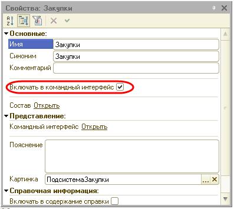
2. Откроем командный интерфейс конфигурации и проверим, что в нем установлена видимость этой подсистемы (или подсистемы ее верхнего (первого) уровня). Если в конфигурации созданы роли, то нужно обратить внимание также и на то, как настроена видимость для различных ролей. Для этого выделим корень дерева объектов конфигурации, вызовем его контекстное меню и выполним команду Открыть командный интерфейс конфигурации.
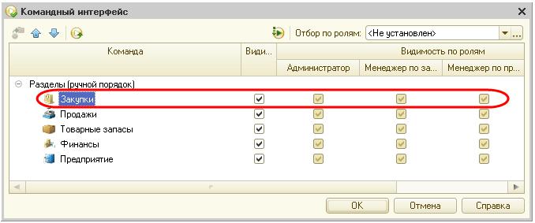
3. Откроем состав объектов подсистемы и убедимся, что подсистема включает в себя хотя бы один объект конфигурации. Если подсистема не содержит ни одного объекта, она не будет отображена в командном интерфейсе. Для этого в окне редактирования подсистемы Закупки откроем закладку Состав.
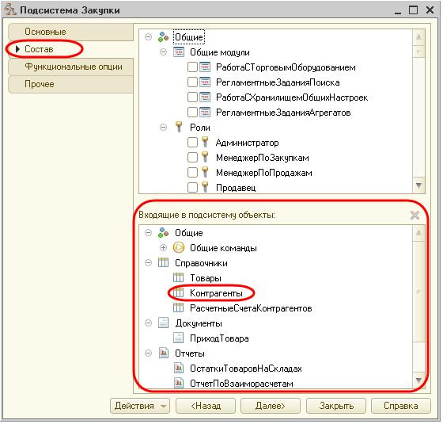
4. Откроем командный интерфейс подсистемы и проверим, что хотя бы одна команда (стандартная или созданная в конфигурации) доступна для настройки в этой подсистеме. Если таких команд нет – подсистема не будет отображена. При этом важно лишь наличие этих команд, а не их видимость. Для этого вызовем контекстное меню подсистемы Закупки и выполним команду Открыть командный интерфейс.
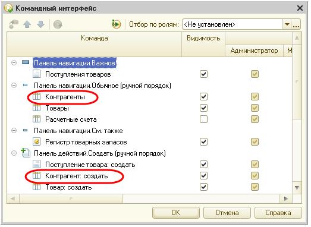
Если в составе команд нет вашей стандартной команды объекта, значит для объекта отключено использование стандартных команд (см. п.1 ниже).
Если в составе команд нет команды, созданной в конфигурации, значит, ей не назначена группа (см. п.2 ниже).
Если для команды назначена не группа подсистемы, а какая-то группа формы, то для того, чтобы команда стала доступна в интерфейсе форм необходимо задать еще и тип параметра этой команды (см. п.2 ниже).
5. Если в конфигурации созданы пользователи, и им назначены определенные роли, то убедимся, что в правах пользователя разрешено использование той подсистемы, к которой относится искомый объект, и всех вышестоящих по иерархии подсистем. Для этого откроем окно редактирования роли (например, Менеджер по закупкам), которая назначена пользователю, под именем которого будет происходить работа с прикладным решением.
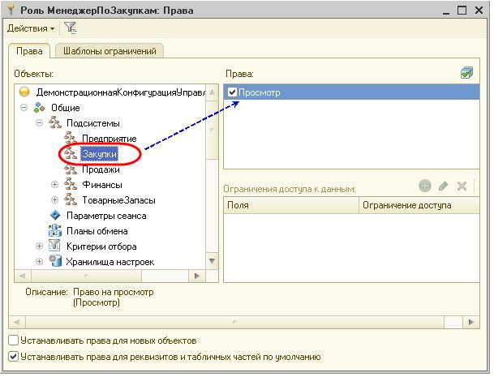
6. Если в конфигурации созданы функциональные опции, и они связаны с каким-либо объектом конфигурации, то этот объект будет отображен в интерфейсе только в случае, если соответствующая функциональная опция включена в прикладном решении. Поэтому убедимся, что та подсистема, к которой относится искомый объект, и все вышестоящие по иерархии подсистемы, не отключены функциональными опциями в режиме исполнения. Для того, чтобы узнать, с какими функциональными опциями связана подсистема, вызовем контекстное меню подсистемы Закупки и выполним команду Дополнительно.
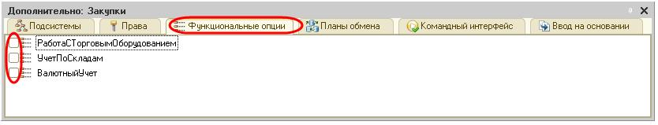
В нашем случае подсистема не связана ни с одной из функциональных опций. Это значит, что отображение подсистемы в интерфейсе не будет зависеть от значения функциональной опции в прикладном решении.
7. В заключение, в режиме 1С:Предприятие проверим, что раздел, к которому относится искомый объект, и все вышестоящие по иерархии разделы, не отключены пользовательскими настройками панели разделов.
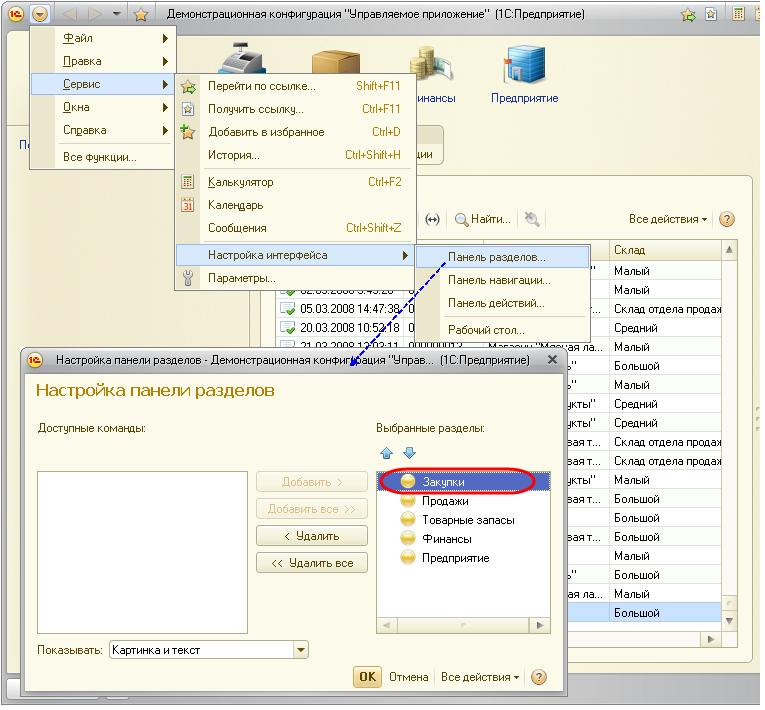
Вернуться к настройкам, выполненным в конфигураторе, можно с помощью команды Все действия – Установить стандартные настройки в окне настройки панели разделов.
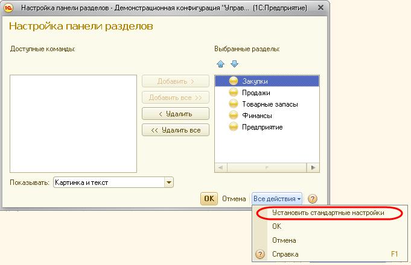
Теперь проверим все, что относится к самому объекту:
1. Что для искомого объекта разрешено использование стандартных команд. Для этого вызовем контекстное меню справочника Контрагенты и откроем палитру его свойств.
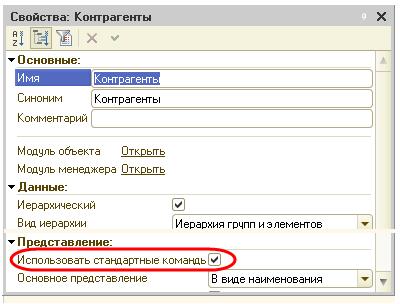
2. Если у объекта существует нестандартная команда, то чтобы увидеть ее в интерфейсе убедимся, что для нее задана группа и, если команда параметризованная, - тип параметра команды. Для этого вызовем контекстное меню нестандартной команды Печать справочника Контрагенты и откроем палитру ее свойств.
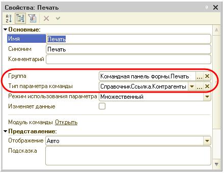
Иначе команда будет недоступна в командном интерфейсе, а параметризованная команда будет недоступна для включения в командный интерфейс форм, соответствующих ее параметру.
3. Откроем командный интерфейс подсистемы и убедимся, что включена видимость команды в подсистеме. При этом нужно обратить внимание не только на то, как настроена видимость по-умолчанию, но и на то, как она настроена для различных ролей. Для этого вызовем контекстное меню подсистемы Закупки и выполним команду Открыть командный интерфейс.
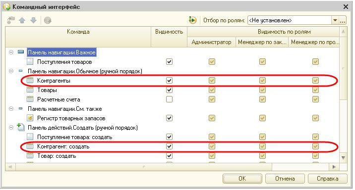
4. Откроем окно редактирования роли (например, Менеджер по закупкам) и проверим, что в правах этой роли разрешено использование искомой команды. Если речь идет о стандартной команде (например, открытия списка справочника) – нужно проверить права на сам объект.
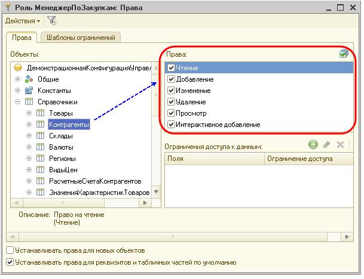
Если речь идет о нестандартной команде (например, Печать) – нужно проверить права на эту команду.
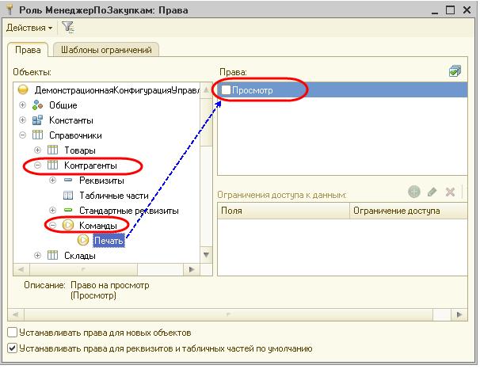
5. Убедимся, что объект или команда не отключены функциональными опциями в режиме исполнения. Для того, чтобы узнать, с какими функциональными опциями связан объект, вызовем контекстное меню справочника Контрагенты и выполним команду Дополнительно.
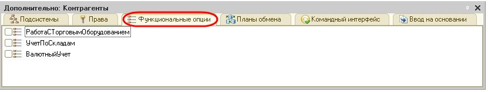
6. В заключение, в режиме 1С:Предприятие проверим, что команда не отключена пользовательскими настройками.
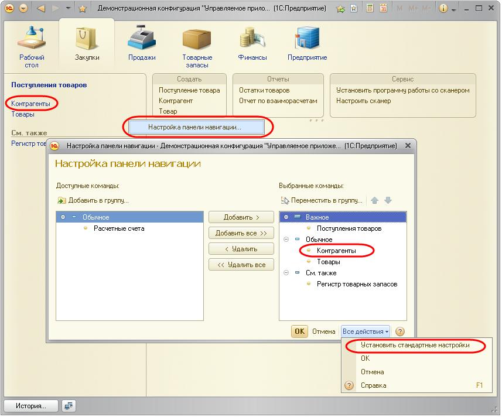
Вернуться к настройкам, выполненным в конфигураторе, можно с помощью команды Все действия – Установить стандартные настройки.
Заметим, что для небольших конфигураций может быть не создано ни одной подсистемы. В этом случае команды для работы с объектами конфигурации будут помещены в раздел Рабочий стол, который создается системой по умолчанию. Вызвав из контекстного меню корня дерева объектов конфигурации команду Открыть командный интерфейс рабочего стола, можно редактировать командный интерфейс этого раздела.